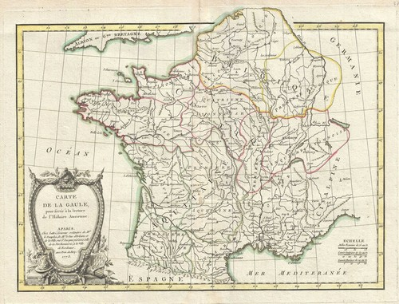

Divide et Impera
Background Information
Gallic Wars
GALLIA EST OMNIS DIVISA IN PARTES TRES...
Civil War
The conquest of Gaul led to numerous debates in the Senate. On one hand, Caesar held popular sway by using plunder from the Gallic Wars to reward his soldiers, fund massive public works like the Forum Iulium, and provide debt relief. But on the other, politicians rooted in the principals of the Republic, like Cato the Younger, labelled the campaign as a war of expansion and said that it only enriched Caesar, who was now powerful enough to declare himself monarch and march on Rome. The tension burst when the Senate, headed by Caesar's former friend Pompey, forced tribune Mark Antony to flee the city and declared Caesar an enemy of the state. Thinking he had no other choice, Caesar gathered his men and crossed the Rubicon.
